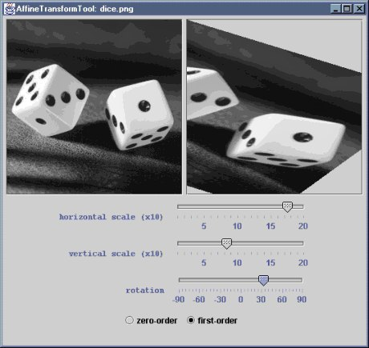

The AffineTransformTool application demonstrates
interactive scaling and rotation of images using the
AffineTransformOp class provided in the Java2D API. An image
is loaded from a file specified on the command line and is displayed,
alongside a transformed version of that image (initially identical to the
original). Sliders are provided to scale the image in the x and y
directions by a factor in the range 0.1-2.0, and to rotate it by an angle
between -90 and +90 degrees. Interpolation can be toggled between
zero-order and first-order.
The file AffineTransformTool.java compiles to produce
AffineTransformTool.class AffineTransformTool$Controls.class
These .class files have been packaged as a single JAR file,
AffineTransformTool.jar. You can install the application by
copying this JAR file, along with either the MS-DOS batch file
AffineTransformTool.bat or the bash shell script
AffineTransformTool.sh, as appropriate. The batch file or
script should be edited to reflect the new location of the JAR file.